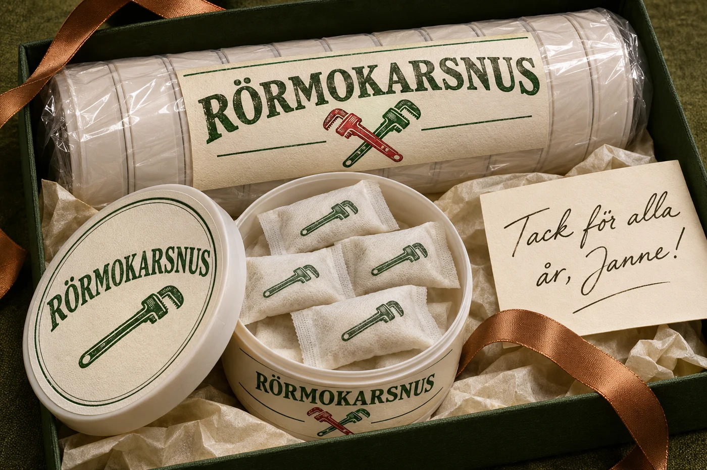

Dosstudion
Skapa din egen dosa.
Börja med ett foto på någon du gillar. Sätt ett namn på locket och en hälsning på stocken. En personlig present i tio dosor.
Supporterserien
För den som står bredvid på läktaren.
Tre supportermotiv. Välj en dosa och lägg till din egen matchdagshälsning.

Presentutförandet
En hel stock,
personligt inslagen.
Tio matchande dosor i ett pappersomslag med din hälsning. Välj till en presentkartong med kort och skriv vem den är ifrån. Eller låt mottagaren gissa.
För producenten
Från original
till färdig stock.
Diskussionsunderlag för en pilot med Haga Snus Factory. Sortiment, minimiupplaga och leveransupplägg bekräftas med producenten.
Produktion per recept
Kan flera kundorder dela ett produktionsparti och få unika etiketter i serier om tio dosor? Vilka recept finns med respektive utan nikotin?
Etikett, omslag & prilltryck
Vi föreslår en personlig etikett och ett pappersomslag runt den inplastade stocken. Små motiv på själva prillorna visas som konceptprov. Vilka tryckytor, material och minimiupplagor fungerar?
Packning & leverans
Vad kostar en standardstock, en presentstock med kort och tio likadana stockar till en adress? Hur kan ni ta emot tryckfiler och hantera mottagarkontroll vid nikotinleverans?